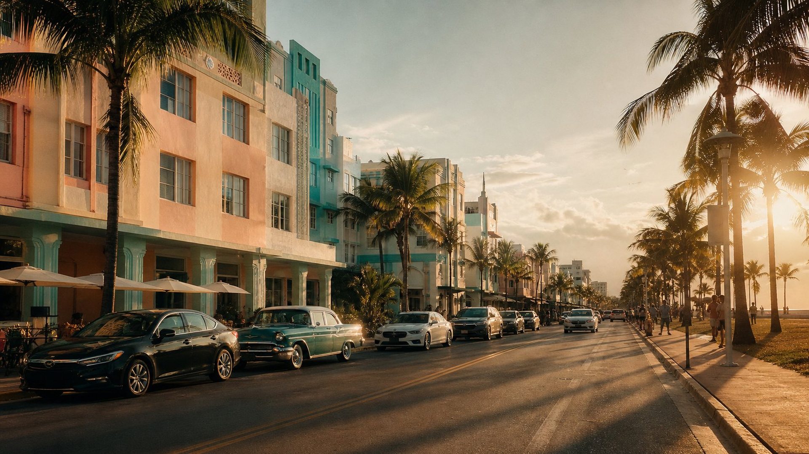
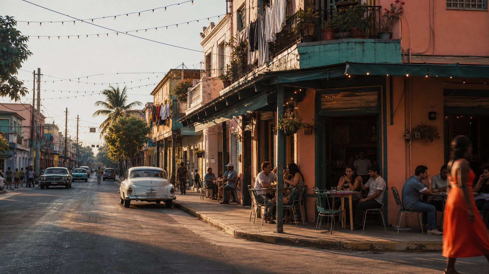
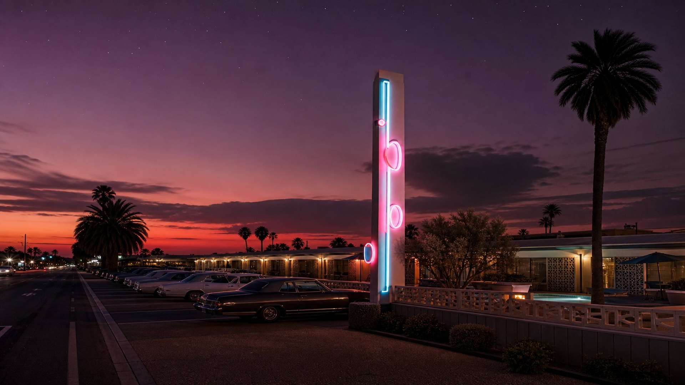

S4 · G3 · Géographie
Vice City
Six quartiers nommés par Rockstar, un comté, une île balnéaire : la ville est plus grande et plus stratifiée que la Vice City de 2002. Voici ce qui est officiellement nommé, ce qui vient de la presse, et ce qui n'existe que dans les fuites.
Vice City, Vice Beach, Vice-Dale : la hiérarchie
Trois noms qui se ressemblent et que les guides confondent souvent. Le matériel officiel de Rockstar les distingue pourtant clairement.
Vice City
L'agglomération entière, au sud-est de Leonida, dans le comté de Vice-Dale. C'est le nom générique utilisé par le jeu et par la presse. VCX-06
Vice Beach
Une ville côtière incorporée à l'intérieur de l'agglomération, connue pour ses hôtels Art déco et son front de mer. VCX-06
Ocean Beach
Un quartier à l'intérieur de Vice Beach, sur la bande balnéaire sud — c'est là que Rockstar situe le garage Shore Court. VCX-04

Les noms de quartiers qui circulent dans les cartes communautaires ne sont pas confirmés par Rockstar et ne sont pas repris ici. Seuls les six quartiers nommés officiellement figurent dans cette page.
Six quartiers officiellement nommés
Chaque entrée ci-dessous est attestée par un panneau visible dans un trailer, une capture publiée par Rockstar ou sa propre copie promotionnelle — pas par un wiki.
| Quartier | Inspiration | Attesté par | Référence |
|---|---|---|---|
| Peacock Bay | Coconut Grove / Peacock Park | Panneau Interstate 97, Trailer 2 | VCX-02 |
| Southside | Brickell / Roads / Coral Way | Même panneau I-97, Trailer 2 | VCX-02 |
| Tequesta | Brickell moderne | Panneau Route 3, capture officielle | VCX-02 |
| Tisha-Wocka | Opa-locka | Copie promo : « Tisha-Wocka flea market » | VCX-03 |
| Stockyard | Wynwood / friches industrielles | Trailer 1, rassemblement de voitures | VCX-03 |
| Ocean Beach | South Beach / Ocean Drive | Description du pack Vintage Vice City | VCX-04 |

Hors limites : Waning Sands
Un seul lieu officiellement nommé se situe juste à côté de Vice City sans en faire partie — et c'est aussi l'un des noms les plus mal cités sur les cartes communautaires.
VCX-05Waning Sands : ville incorporée distincte au nord de Vice City, dans le comté de Leonard. Confirmée par un panneau et un plan de centre commercial dans le Trailer 1.VCX-01Rappel : aucun septième quartier de Vice City n'a été nommé par Rockstar. Les autres noms relèvent des fuites de 2022.
Repères de terrain
Ce que la presse décrit
- Les quartiers balnéaires concentrent tourisme, sport de plage, boîtes et défilés de voitures.
VCX-08 - Les zones portuaires et industrielles servent de décor aux braquages, à la contrebande et aux caches de véhicules.
- La densité de PNJ est décrite comme très supérieure à celle de GTA V sur le front de mer.
Conséquences pratiques
- Forcer le train avant un braquage : scanner une voiture avec WAINK avant de quitter un quartier dense. Voir la page Véhicules
- Sortir une arme en zone touristique fait paniquer les PNJ et attire la police. Voir la page Armes
- Le centre financier est le terrain des poursuites verticales et des toits.
